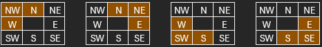

A grid-based world builder
farm edition
Specialisation Project
About This Project
This project is part of a course in my education at The Game Assembly. The goal of the course is for students to plan and execute an independent project within a set time frame - approximately 80 hours in total, which includes the time spent building this website.
For my project I chose to build a small grid-based world builder with a farm theme. I wanted to work on something I found both interesting and fun - which was hard to find, since almost everything sounds interesting when it's new. My inspiration came from a lecture in an earlier course about procedurally generated maps and dungeons. I had a thought that the same underlying logic could be applied to tile placement on a grid, and that idea stuck with me. I have always loved games like Harvest Moon and Stardew Valley, so it felt natural to take the project in that direction on a small scale.
MVP
These are the goals I set for this project. I was able to fulfil everything in my MVP list and a few from the Nice to Have list.
Grid & Tiles
- The grid size is determined by the resolution of the window.
- There are at least three tile types to provide visual variation.
- When a tile type is changed, its texture is determined by its neighbours. Neighbouring cells update automatically if necessary.
- Hovering the mouse over a cell highlights it.
Objects & Placement
- Objects can be placed on the grid by selecting the correct tool.
- A placed object blocks the ability to change the tile type of that cell.
- Objects can be removed to unblock the cell.
- Fences are the minimum object to implement. They tile in the same way as the grid.
Controls & Interaction
- The active action can be changed by switching tools - implemented via Dear ImGui.
- A single click completes an action.
Nice to Have
- Holding and dragging the mouse can change tiles and place fences.
- At least one additional object type can be placed on the grid.
- Seeds can be planted and grown into flowers.
- Plants must be watered before they can grow.
- A HUD for switching tools.
- A controllable player character.
Grid
I kept the grid setup simple and flexible. Rather than hard-coding a fixed size, the grid dimensions are calculated from the window resolution at initialisation - this way the grid always fills the available space without needing to be adjusted manually if the resolution changes.
float cellsForWidth = std::floor(aGridSizeWidth / myCellWidth); float cellsForHeight = std::floor(aGridSizeHeight / myCellHeight); myGridWidth = static_cast<int>(cellsForWidth); myGridHeight = static_cast<int>(cellsForHeight); float gridSizeWidth = (cellsForWidth * myCellWidth); float gridSizeHeight = (cellsForHeight * myCellHeight); float diffWidth = aGridSizeWidth - gridSizeWidth; float diffHeight = aGridSizeHeight - gridSizeHeight; if (diffWidth > 0) { myGridStartPos.x = aStartPos.x + (diffWidth / 2); } else { myGridStartPos.x = aStartPos.x; } if (diffHeight > 0) { myGridStartPos.y = aStartPos.y + (diffHeight / 2); } else { myGridStartPos.y = aStartPos.y; } myGridEndPos = { aStartPos.x + gridSizeWidth, aStartPos.y + gridSizeHeight };
Tiling
To begin, I had to figure out how many unique tile variations I needed and which directions each one responds to. I started with the path tile, since it requires the most variations - I wanted tiles that respond to all 8 surrounding cells, both orthogonal and diagonal. However, a diagonal neighbour is only considered valid if both of its adjacent orthogonal neighbours share the same tile type.
I did some research but could not find a complete guide that suited my needs, so I mapped it out in Excel to visualise the combinations myself. The result is 47 unique tile variations in total.
| # | Directions | |||||||
|---|---|---|---|---|---|---|---|---|
| 0 | Isolated | |||||||
| Singles | ||||||||
| 1 | N | |||||||
| 2 | W | |||||||
| 3 | E | |||||||
| 4 | S | |||||||
| Corners | ||||||||
| 5 | N | W | ||||||
| 6 | N | E | ||||||
| 7 | S | W | ||||||
| 8 | S | E | ||||||
| Straights | ||||||||
| 9 | N | S | ||||||
| 10 | E | W | ||||||
| T-Crossings | ||||||||
| 11 | N | W | S | |||||
| 12 | N | W | E | |||||
| 13 | N | E | S | |||||
| 14 | E | W | S | |||||
| All Orthogonal | ||||||||
| 15 | N | E | S | W | ||||
| Corners with 1 Diagonal | ||||||||
| 16 | N | W | NW | |||||
| 17 | N | E | NE | |||||
| 18 | S | W | SW | |||||
| 19 | S | E | SE | |||||
| T-Crossings with 1 Diagonal | ||||||||
| 20 | N | W | S | NW | ||||
| 21 | N | W | S | SW | ||||
| 22 | N | W | E | NW | ||||
| 23 | N | W | E | NE | ||||
| 24 | N | E | S | NE | ||||
| 25 | N | E | S | SE | ||||
| 26 | E | W | S | SW | ||||
| 27 | E | W | S | SE | ||||
| T-Crossings with 2 Diagonals | ||||||||
| 28 | N | W | S | NW | SW | |||
| 29 | N | W | E | NW | NE | |||
| 30 | N | E | S | NE | SE | |||
| 31 | E | W | S | SW | SE | |||
| All Orthogonal + All Diagonals | ||||||||
| 32 | N | E | S | W | NW | SW | NE | SE |
| All Orthogonal + 1 Diagonal | ||||||||
| 33 | N | E | S | W | NW | |||
| 34 | N | E | S | W | NE | |||
| 35 | N | E | S | W | SE | |||
| 36 | N | E | S | W | SW | |||
| All Orthogonal + 2 Diagonals | ||||||||
| 37 | N | E | S | W | NW | NE | ||
| 38 | N | E | S | W | NW | SE | ||
| 39 | N | E | S | W | NW | SW | ||
| 40 | N | E | S | W | NE | SE | ||
| 41 | N | E | S | W | NE | SW | ||
| 42 | N | E | S | W | SE | SW | ||
| All Orthogonal + 3 Diagonals | ||||||||
| 43 | N | E | S | W | NW | NE | SW | |
| 44 | N | E | S | W | NW | NE | SE | |
| 45 | N | E | S | W | NW | SW | SE | |
| 46 | N | E | S | W | NE | SW | SE | |

Add your Excel screenshot as img/tiling_excel.png'"/>To generate a unique index for each tile variation, each of the 8 neighbours is assigned a specific bit value. Checking all neighbours produces a bitmask that maps to a unique integer - this is then used to look up the correct sprite in a cached vector. The lookup table is initialised once at startup and maps every valid bit combination to its corresponding tile index.
void Grid::CalculateTileToPlace(GridCell& aCell, bool aIsNeighbour) { int index = 0; constexpr int size = 8; // = aCell.neighbours.size() bool nIsSame[size]; for (int i = 0; i < size; i++) { // A negative index means aCell is at the grid edge // no valid neighbour exists in this direction. if (aCell.neighbours[i] < 0) { nIsSame[i] = false; continue; } // true if neighbour shares the same tile type nIsSame[i] = (myCells[aCell.neighbours[i]].tileType == aCell.tileType); } // Build a bitmask from the 8 neighbours if (nIsSame[0]) index |= 1; if (nIsSame[1]) index |= 2; if (nIsSame[2]) index |= 4; if (nIsSame[3]) index |= 8; if (nIsSame[4]) index |= 16; if (nIsSame[5]) index |= 32; if (nIsSame[6]) index |= 64; if (nIsSame[7]) index |= 128; // Recursively update neighbours (only on the initial call) if (!aIsNeighbour) { for (int i = 0; i < aCell.neighbours.size(); i++) { if (nIsSame[i]) { CalculateTileToPlace(myCells[aCell.neighbours[i]], true); } } } aCell.tileIndex = myTileLUT[index]; aCell.backgroundSprite.sharedData = GetATileSprite(aCell.tileType, aCell.tileIndex); }
int Grid::InitTileLookupTable(int aMask) { // Normalise mask: a diagonal is only valid if both orthogonal neighbours are true bool north = aMask & 2; bool east = aMask & 16; bool south = aMask & 64; bool west = aMask & 8; if (!(north && west)) aMask &= ~1; if (!(north && east)) aMask &= ~4; if (!(south && west)) aMask &= ~32; if (!(south && east)) aMask &= ~128; int mask = aMask; bool n = mask & 2, w = mask & 8; bool e = mask & 16, s = mask & 64; bool nw = mask & 1, ne = mask & 4; bool sw = mask & 32, se = mask & 128; int edgeCount = (n?1:0) + (w?1:0) + (e?1:0) + (s?1:0); int diagCount = (nw?1:0) + (ne?1:0) + (sw?1:0) + (se?1:0); if (edgeCount == 0) return 0; if (edgeCount == 1) { if (n) return 1; if (w) return 2; if (e) return 3; return 4; } if (edgeCount == 2) { if (n && s) return 5; if (e && w) return 6; if (n && w && !nw) return 7; if (n && e && !ne) return 8; if (s && w && !sw) return 9; if (s && e && !se) return 10; if (n && w && nw) return 20; if (n && e && ne) return 21; if (s && w && sw) return 22; if (s && e && se) return 23; } if (edgeCount == 3) { if (diagCount == 0) { if (!s) return 11; if (!e) return 12; if (!w) return 13; if (!n) return 14; } if (diagCount == 1) { if (!s && nw) return 24; if (!s && ne) return 25; if (!e && nw) return 26; if (!e && sw) return 27; if (!w && ne) return 28; if (!w && se) return 29; if (!n && sw) return 30; if (!n && se) return 31; } if (diagCount == 2) { if (!s) return 16; if (!e) return 17; if (!w) return 18; if (!n) return 19; } } if (edgeCount == 4) { if (diagCount == 0) return 15; if (diagCount == 1) { if (nw) return 32; if (ne) return 33; if (sw) return 34; if (se) return 35; } if (diagCount == 2) { if (nw && ne) return 36; if (ne && se) return 37; if (se && sw) return 38; if (nw && sw) return 39; if (nw && se) return 40; if (ne && sw) return 41; } if (diagCount == 3) { if (nw && ne && sw) return 42; if (nw && ne && se) return 43; if (nw && sw && se) return 44; if (ne && sw && se) return 45; } if (diagCount == 4) return 46; } return 0; }
Once the tile logic was in place, applying the same system to fences was straightforward. The main difference is that fences only check the four orthogonal neighbours, not the diagonals, making it a simpler 4-bit check.
std::shared_ptr<Tga::SpriteSharedData> Fence::CalculateFenceToPlace(int aCellIndex, bool aIsNeighbour) { auto gameScene = GameWorld::GetInstance().GetCurrentGameScene().lock(); auto& grid = gameScene->GetGrid(); int gridWidth = grid.GetGridWidth(); int column = aCellIndex % gridWidth; int row = aCellIndex / gridWidth; constexpr int size = 4; int neighbourIndices[size]; neighbourIndices[0] = (aCellIndex + gridWidth) % gridWidth == column ? (aCellIndex + gridWidth) : -1; // N neighbourIndices[1] = (aCellIndex + 1) / gridWidth == row ? (aCellIndex + 1) : -1; // E neighbourIndices[2] = (aCellIndex - gridWidth) % gridWidth == column ? (aCellIndex - gridWidth) : -1; // S neighbourIndices[3] = (aCellIndex - 1) / gridWidth == row ? (aCellIndex - 1) : -1; // W int index = 0; bool nSame[size]; for (int i = 0; i < size; i++) { if (neighbourIndices[i] < 0) { nSame[i] = false; continue; } nSame[i] = (grid.GetGridCell(neighbourIndices[i]).cellType == CellType::Fence); } // 4-bit bitmask: N=1, E=2, S=4, W=8 if (nSame[0]) index |= 1; if (nSame[1]) index |= 2; if (nSame[2]) index |= 4; if (nSame[3]) index |= 8; if (!aIsNeighbour) { for (int i = 0; i < size; i++) { if (nSame[i]) { auto& otherObjects = gameScene->GetOtherGameObjects(); auto it = std::find_if(otherObjects.begin(), otherObjects.end(), [&](const std::shared_ptr<GameObject2D>& obj) { return obj->GetGridIndex() == neighbourIndices[i]; }); if (it != otherObjects.end()) (*it)->SetSpriteSharedData(CalculateFenceToPlace(neighbourIndices[i], true)); } } } return myCachedFenceSprites[myFenceLUT[index]]; }
Conclusion
I'm very glad I chose this project for my Specialisation. I learned more than I initially expected and had a lot of fun throughout the process.
During the development of this project, I encountered a number of technical problems along the way, which I really enjoyed solving. It felt rewarding to take an idea and gradually turn it into something functional. If I had more time, I would love to continue expanding the world and adding more features such as a player and interactive mechanics.